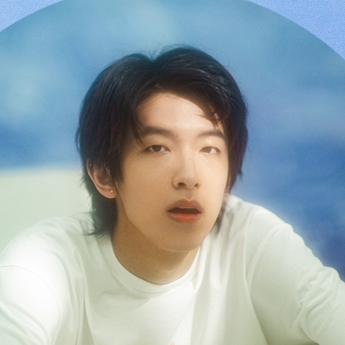
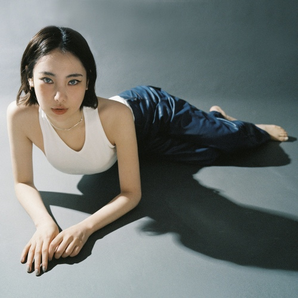

얼터너티브
얼터너티브는 대안적이고 실험성 짙은 음악을 말한다. 얼터너티브 장르 안에 댄스, 록, 힙합, 메탈, R&B, 컨트리 등 다양한 세부 장르가 있다. 대중음악 역사상 가장 스펙트럼이 넓고, 지금도 현재 진행형인 장르이다. 그만큼 다양하고 처음 접하는 음악들을 들을 수 있다.

아티스트

Wildberry
와일드베리는 자연과 우주에서 영감을 받아 음악을 창작하는 여성 싱어송라이터이다. 그녀의 음악 작업은 직관적으로 시작되고 어떠한 제한이나 목표를 두지 않는다. 그리하여 장르에 국한되지 않고 전자음악, 포크, 록 등 다양한 스타일을 꾸준히 실험하고 있다. 이슬 같은 목소리와 신비로운 선율로 맑아지는 듯한 기분을 선사한다.

Matt Lv
Matt Lv는 2019년 데뷔한 중국의 싱어송라이터이다.
2021년 중국의 음악 버라이어티 쇼에 출현해 최종 우승을 차지한 가수이다. 그만큼 탄탄한 음악 제작 능력과 이해력을 가지고 있다. R&B 중에서도 얼터너티브라는 실험적인 장르를 다루지만, Matt Lv의 노래를 들으면 마음이 편안해지고 나른해진다.

유라
유라는 2018년에 데뷔한 국내 싱어송라이터이다. 한국 얼터너티브 음악의 흐름에서 유라는 가장 대표적인 이름 중 하나다. 흡인력 있고 몽환적인 음색의 보컬, 얼터너티브 알앤비와 팝에 기반을 두고 록과 일렉트로닉까지, 유라의 음악세계는 독특하고 폭넓다. 유라의 음악은 감각적인 이미지를 자극하는 표현을 풀어낸다.
음악

Coming Home
Wildberry

Did I?
Matt Lv

ZEBRA
유라